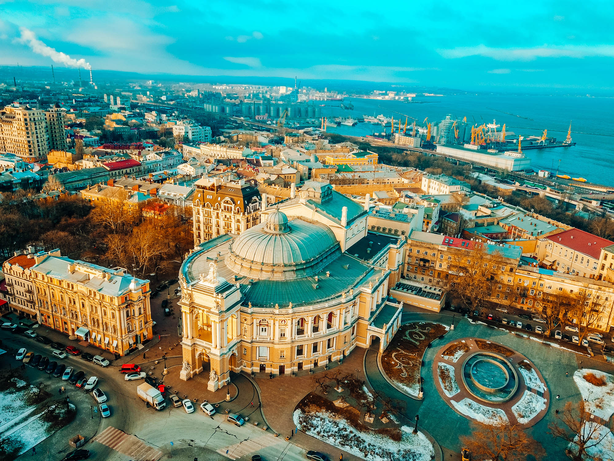

Місце народження: 19 вересня 2005 року, м. Рівне
Освіта: Ліцей №12 м. Рівне;
НТУУ "КПІ" м. Київ
Хобі:
Улюблені книги або фільми:
Одеса - місто, адміністративний центр Одеського району та Одеської області України, місто-герой (з 1965).
Її будували найкращі європейські архітектори. Тому більш якісного модерну і еклектики, ніж в Одесі, немає ніде в Україні. Одеса - найдосконаліше і найдоросліше місто в Україні. А сприйняття місту надає неповторний одеський колорит
Приморський бульвар - один з символів Одеси і чи не головна вулиця історичного центру. Бульвар починається від Думської площі і закінчується біль Тещиного мосту за Воронцовським палацом.
У 1764 році османи збудували тут фортецю Єні-Дунья, яку у 1793 році модернізували під керівництвом Франца де Воллана.
З відсуванням кордонів Російської імперії до Дунаю фортеця стала непотрібною, і на її місце було прокладено Миколаївський бульвар. Бульвар, який у свій час носив назви Новий, Приморський, Міський, бульвар Фельдмана сьогодні являє собою...
